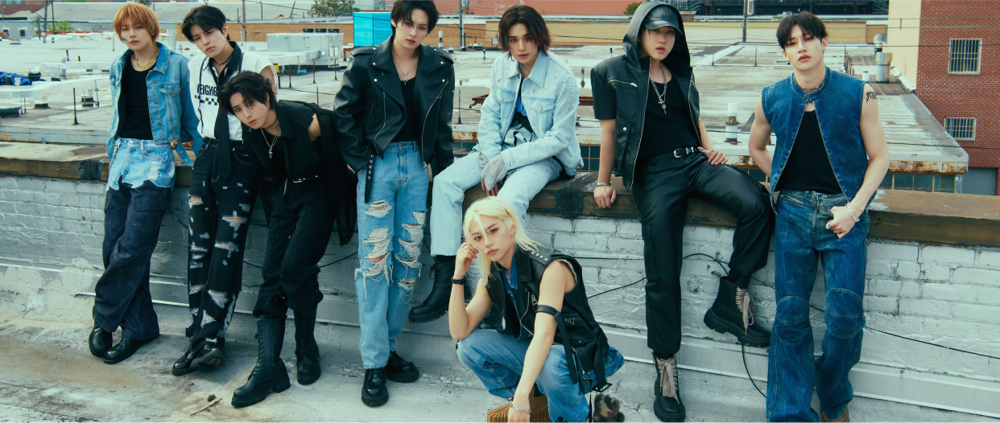

Stray Kids
introdução
Stray Kids (스트레이 키즈), também conhecido como SKZ, é um grupo masculino sul-coreano de oito membros da JYP Entertainment. O grupo foi formado por meio do reality show de competição de mesmo nome, Stray Kids.
membros
Bang Chan (방찬)
Nascimento: 03.10.1997
Nacionalidade: Australiano
Lee Know (리노)
Nascimento: 25.10.1998
Nacionalidade: Sul-coreano
Changbin (창빈)
Nascimento: 11.08.1999
Nacionalidade: Sul-coreano
Hyunjin (현진)
Nascimento: 20.03.2000
Nacionalidade: Sul-coreano
Han (한)
Nascimento: 14.09.2000
Nacionalidade: Sul-coreano
Felix (필릭스)
Nascimento: 15.09.2000
Nacionalidade: Australiano
Seungmin (승민)
Nascimento: 22.09.2000
Nacionalidade: Sul-coreano
I.N (아이엔)
Nascimento: 08.02.2001
Nacionalidade: Sul-coreano
informação geral
Debut: 25 de março de 2018
Fandom: STAY
Empresa: JYP Entertainment
Geração: 4ª Geração
País: Coreia do Sul